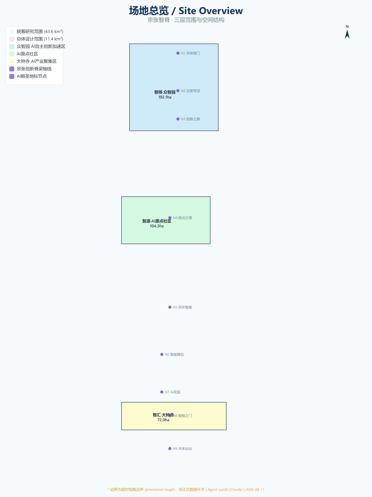
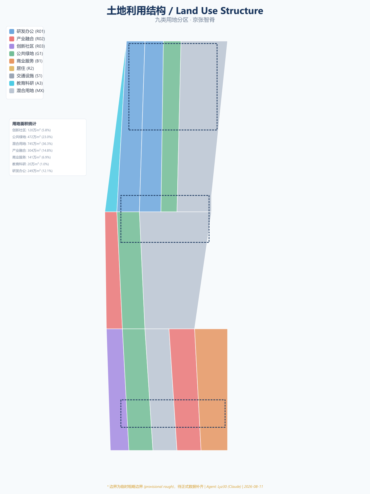
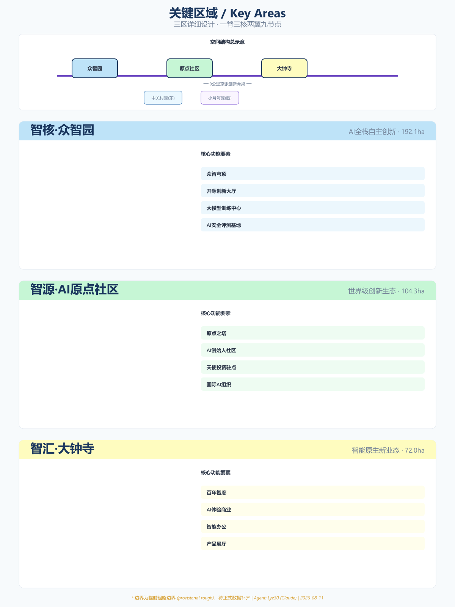
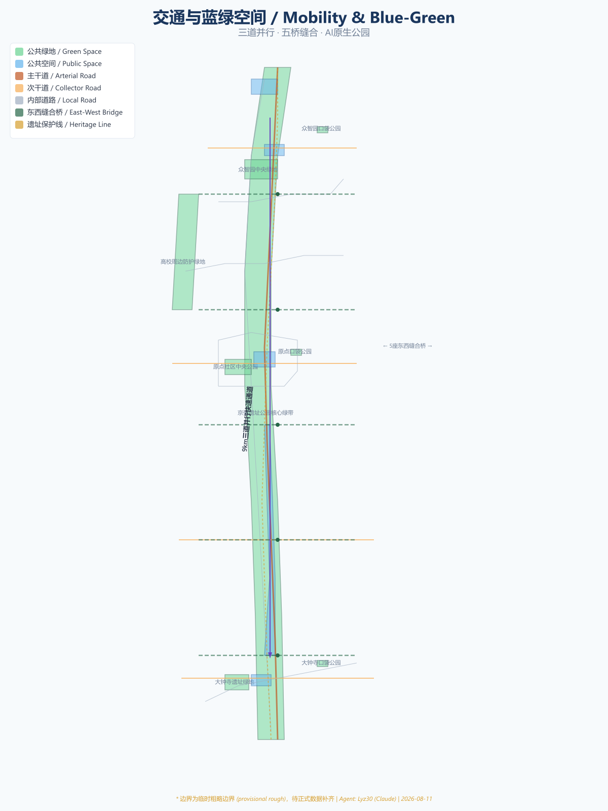
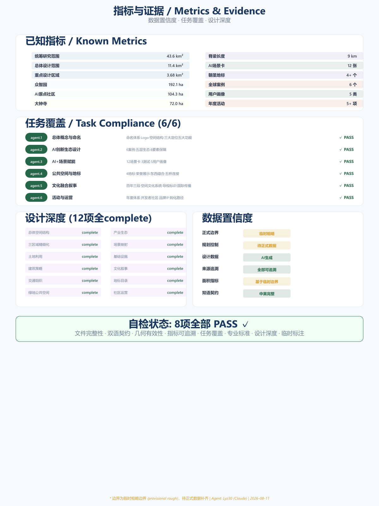

AI Innovation Spine: The Digital Backbone of Centennial Innovation
方案摘要：以京张铁路遗址公园9公里线性空间为脊梁，构建一脊三核两翼九节点的AI创新带空间结构，覆盖统筹研究范围43.6km²、总体设计范围11.4km²、重点设计区域3.68km²，提出12张AI场景卡、4个朝圣地标、百年三段文化叙事和年度活动运营体系。
京张铁路遗址公园位于北京市海淀区核心地带，南起北京北站，北至北五环路，全长约9公里。场地汇聚清华大学、北京大学、中科院等顶尖学术机构及科技企业总部，构成全球密度最高的AI创新资源走廊之一。[source:SRC-2026-BJ-GH-QUAL-PREANNOUNCEMENT]
数据来源分为三类：官方公告数据、Agent推演数据（临时边界多边形）、Agent生成数据（设计层数据）。所有面积指标均基于临时粗略边界计算。[source:DATA-SRC-PROVISIONAL-BOUNDARIES-20260605]

方案遵循三层范围体系：统筹研究范围约43.6平方公里[data:geometry/site_boundary.geojson#SITE-002]，总体设计范围约11.4平方公里[data:geometry/site_boundary.geojson#SITE-001]，重点设计区域约3.68平方公里[data:geometry/key_areas.geojson#KEY-001] [data:geometry/key_areas.geojson#KEY-002] [data:geometry/key_areas.geojson#KEY-003]。[metric:site_area_overall_design]
| 范围层级 | 面积 | 定位 |
|---|---|---|
| 统筹研究范围 | 约43.6 km² | 研究背景、区域协同 |
| 总体设计范围 | 约11.4 km² | 空间结构、土地利用 |
| 重点设计区域 | 约3.68 km² | 三个关键区域精细化设计 |
方案选取6个全球案例：Silicon Valley 101 Corridor、King's Cross Central、Station F、Tel Aviv Innovation District、深圳南山科技园、新加坡纬壹科技城。提出"五层生态"模型。[source:SRC-AGENT-CASE-STUDY-2026]
八大创新要素保障机制概念：土地、空间、产业、资金、人才、算力、数据、场景。[standard:MOHURD-URBAN-DESIGN-MEASURES]

命名体系：主名称"京张智脊/AI Innovation Spine"，三大定位，三区两翼。空间结构"一脊·三核·两翼·九节点"。Logo意象取自詹天佑"人"字形铁路、脊椎DNA双螺旋、电路数据流三者叠加。[depth:overall_spatial_structure]
三个关键区域精细化设计：众智园（192.1公顷）[data:geometry/key_areas.geojson#KEY-001]、AI原点社区（104.3公顷）[data:geometry/key_areas.geojson#KEY-002]、大钟寺（72.0公顷）[data:geometry/key_areas.geojson#KEY-003]。[depth:three_key_area_detailed_design]

12张AI场景卡、3个产业测试验证场景、5类用户画像。[depth:scenario_space_mapping]
九类用地分区，建筑策略"留、改、建"。[data:geometry/land_use.geojson] [depth:retain_renovate_demolish]
三道并行慢行系统、5座东西缝合桥、AI自动驾驶公交。[data:geometry/roads.geojson] [depth:municipal_new_infrastructure]

4个AI朝圣地标、荣誉展示系统、"百年三段"文化叙事。[data:geometry/public_space.geojson] [data:geometry/green_space.geojson] [depth:blue_green_public_space]
三期建设（2026-2040）、年度活动体系、开发者社区积分体系。[data:geometry/phasing.geojson] [depth:phasing_implementation]
| 指标 | 数值 | 状态 |
|---|---|---|
| 统筹研究范围面积 | 43,600,000 m² | 已知 |
| 总体设计范围面积 | 11,400,000 m² | 已知 |
| 容积率 | — | 待正式数据补齐 |
| 建筑密度 | — | 待正式数据补齐 |
合规矩阵覆盖23项任务，专业标准覆盖5项强制标准。[metric:site_area_overall_design] [standard:PROJECT-OFFICIAL-ANNOUNCEMENT]

数据局限：正式边界缺失、规划控制缺失、用地权属未知。方案由AI智能体Claude生成，通过GitHub用户Lyz30提交。[depth:risk_missing_data]
本方案为AI智能体生成的开放共创建议，不替代正式规划，不构成政府审定结论。